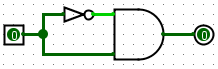
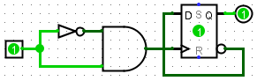
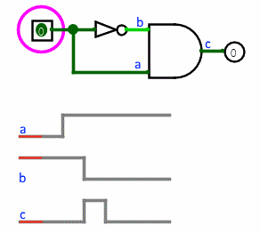
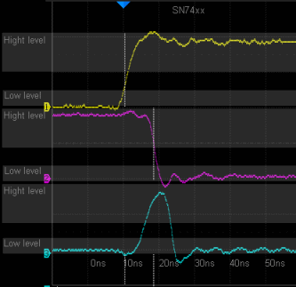

Задержки логических элементов
В качестве примера глубины проработки алгоритма моделирования Logisim-evolution рассмотрим следующую классическую схему:

Теоретически эта схема всегда должна выдавать логический 0 на выходе, так как реализует функцию x ∧ ¬x. Однако в реальных физических устройствах (и в математической модели Logisim-evolution) логические элементы, такие как инвертор (НЕ), не реагируют на изменение входного сигнала мгновенно. В результате, при переключении входного сигнала с 0 на 1, на короткое время (равное задержке инвертора) на обоих входах элемента И окажутся логические единицы. Это приведёт к кратковременному появлению 1 на его выходе — возникает так называемый статический риск сбоя (или «иголка»).
Невооружённым глазом этот микроимпульс на экране заметить сложно, но его влияние станет очевидным, если подключить выход элемента И к тактовому входу (C) динамического D-триггера:

Переключение входного сигнала с 0 на 1 с помощью инструмента «Нажатие» генерирует этот микроимпульс, который выступает в роли полноценного тактового сигнала для D-триггера, заставляя его менять своё состояние при каждом переходе входа схемы в единицу. Этот скрытый процесс переключений можно детально изучить, используя пошаговый режим моделирования.
Каждый логический компонент в библиотеке обладает собственной внутренней задержкой. Более сложные макрокомпоненты обычно имеют бо́льшие задержки, однако эти программные значения носят абстрактный характер и могут не совпадать с реальными аппаратными таймингами конкретных микросхем.

Модель Logisim-evolution

Реальный физический процесс
С вычислительной точки зрения учёт задержек в пределах одного плоского чертежа относительно прост. Однако корректная сквозная обработка задержек внутри иерархии многоуровневых подсхем представляет собой сложную задачу. Logisim-evolution решает её, помещая события изменения сигналов всех примитивных компонентов в единую глобальную очередь (расписание), независимо от глубины вложенности компонента в дереве проекта.
На вкладке «Моделирование» в окне «Параметры проекта» можно активировать функцию добавления случайных микрозадержек к времени распространения сигналов. Это позволяет имитировать естественную технологическую неоднородность реальных физических компонентов. Например, классический RS-триггер, собранный на двух элементах ИЛИ-НЕ, без внесения такой случайности мгновенно вошёл бы в состояние бесконечных автоколебаний (метастабильность), поскольку оба вентиля обрабатывали бы свои входы абсолютно синхронно. По умолчанию эта функция случайных задержек отключена.
Разумеется, симулятор не претендует на стопроцентную SPICE-совместимую точность моделирования аналоговых процессов, но базовая дискретная логика переходов и задержек обрабатывается максимально приближенно к инженерной реальности.
Далее: Ошибки генерации (Автоколебания).